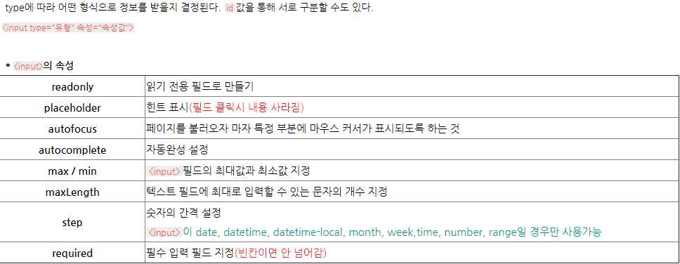
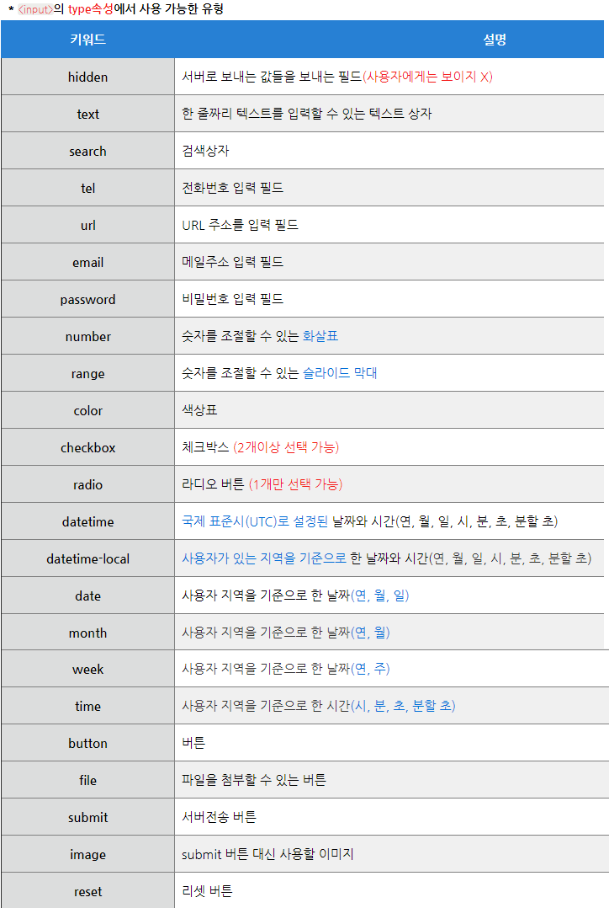

Form 태그, Semantic tag, 주석
Form 태그: 입력 양식 전체를 감싸는 태그. form 태그와 그 내부의 태그로 나뉜다.
form: form을 생성하는 태그. form의 요소(input등)가 여러 개일 경우 ul을 이용해 묶어주기도 한다.
form 태그의 속성: method(전송 방식 선택 - get,post), name(form을 식별하기 위한 이름)
action: form을 전송할 서버쪽의 script 파일을 지정, target: action에서 지정한 script 파일을 현재 창 이외의 위치에 열도록 지정.- input태그


시멘틱 태그: 사람들이 태그의 이름만 보고도 역할이나 위치를 알 수 있도록 만든 태그
- article: 내용을 정의함.
- aside: 페이지 본문을 제외한 콘텐츠(링크, 광고, 사이드바 표시 등)를 정의함.
- header: 사이트의 머릿글을 지정함. form 태그나 nav 태그를 이용하여 검색창이나 메뉴를 넣음.
- footer: 문서 또는 섹션의 바닥글을 지정. 주로 저작권, 연락처 등을 표시함.
- section: header, footer과 함께 문서의 구역을 정의함.
- details: 사용자가 보거나 숨길 수 있는 추가 세부 정보를 정의함.
- summary: details 요소를 위한 눈에 보이는 제목을 정의함.
기타
주석: [--!--] - 웹페이지에 보이지 않는 주석
table: 표를 만드는 데 쓰이는 태그. th 태그(표의 제목), tr 태그(가로줄), td 태그(셀)의 세 가지 태그로 구성.
함께 쓰이는 속성: colspan(가로줄 병합 개수), rowspan(세로줄 병합 개수), height 등